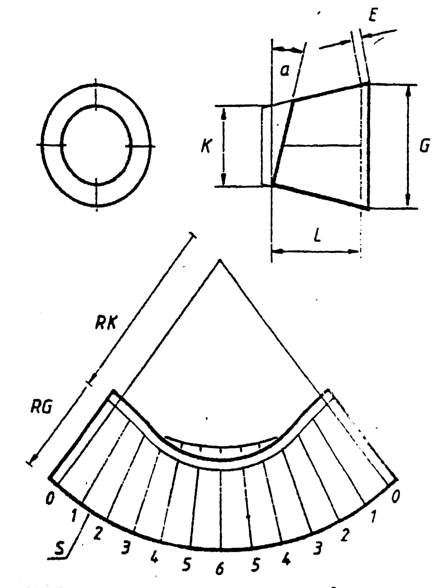

This application does not work properly without JavaScript enabled. Please enable it to continue.
Right Cone Cut Obliquely - Trichter schräg geschnitten - Verloop Schuin Gesneden - Trihter Koso Sečeni
